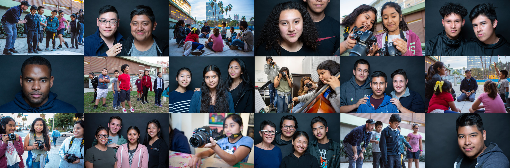

About Us
In 1989, a young professional in the community became deeply concerned about the youth living in the Rampart District of Los Angeles. He watched as these kids were getting shot on the streets and were being successfully recruited by violent gang members. They didn’t have a safe place to just hang out and they lacked any sort of positive role models. These youth were headed down a road marked by poverty and criminal behavior.
It was then that this young professional, Mitchel Moore, founded Heart of Los Angeles (HOLA). He began simply by inviting a handful of young guys to play basketball in an old dilapidated gym located in the back of a local church. As word spread, more students came looking for any kind of positive outlet, a listening ear and a safe haven from the world around them. Mitch recruited his friends to help out with art, music and dance classes, as well as helping these kids with their homework. Thirty years later, HOLA serves more than 2,100 kids each year through structured and exceptional academic, arts and athletic programs and has a four-building campus located in the heart of this still impoverished and underserved community.